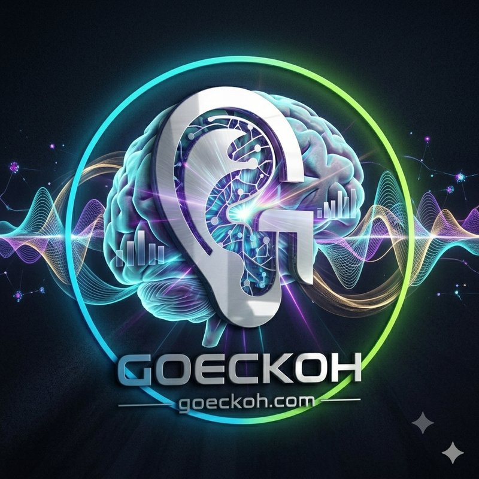

Goeckoh corrects your voice and returns it to your ear in real time — within the biological window where your brain can actually learn from what it hears. For children and adults with ASD, dysarthria, and apraxia. No appointments. No synthetic voice. No cloud. Your voice, shaped.

The ear. The brain. The signal.
Your voice enters. Corrected, it returns.
The brain hears itself succeed.
The words are already there. What's missing is the loop between saying them and hearing how they landed — the loop every fluent speaker relies on without thinking about it. Goeckoh closes that loop, in the moment it's needed.
A teacher, a cousin, a cashier — understanding on the first try instead of the third or fourth. That's not a small thing when it happens dozens of times a day. Goeckoh works in the moment the words are spoken, not after the fact.
After a stroke or traumatic brain injury (TBI), speech is often the last thing to return — and the slowest, because clinic time is scarce and healing needs repetition. Goeckoh gives the brain the same kind of real-time correction signal a therapy session provides, available every time you speak, not once a week.
Apraxia isn't about knowing the word — it's the signal from brain to mouth losing precision on the way out. Goeckoh corrects inside that same window, while the brain is still forming the sound, instead of surfacing the mismatch later in a session note.
Millions of people struggle to be understood — not because they aren't trying, but because their brain never gets accurate feedback on how their speech sounds. Current treatments are slow, expensive, and often dehumanizing.
Goeckoh works the moment you put your earbuds on. No enrollment. No configuration. No waiting room. The full correction engine runs on your phone.
Goeckoh is built on the neuroscience of corollary discharge — the brain's own mechanism for comparing the voice it intended to produce with the voice it actually hears. When that comparison is given a corrected signal at the right moment, the brain can update its motor program and learn.
When your motor cortex commands your vocal tract to speak, it simultaneously sends a copy of that command — a corollary discharge — to your auditory cortex. This prediction arrives before you hear your own voice, letting the brain suppress self-generated noise and stay alert to the outside world.1
Your brain compares its prediction to what it actually hears within roughly 200ms of phonation onset. Deliver a corrected signal inside that window and the brain accepts it as self-produced speech — triggering the N1 suppression response that marks successful motor-auditory integration.2,3
The resonant peaks of the vocal tract — the formants — determine whether a sound is heard as the vowel the speaker intended. Targeted, real-time shaping of these frequencies is how Goeckoh brings the heard voice closer to the intended one, without changing pitch, speaking rate, or personal vocal quality.4,5
Goeckoh preserves your fundamental frequency, prosody, and vocal identity. It shapes specific acoustic properties while leaving everything else exactly as you sound. It is not a synthetic voice. It is not delayed feedback. It is your voice, corrected.3
Goeckoh did not invent the principles it is built on. Those principles emerged from university laboratories over sixty years. We engineered a way to apply them continuously, in real time, on a consumer device.
Your child puts on earbuds and speaks. Goeckoh runs on the phone in their pocket. You monitor their session from your own device — anywhere, any time. No clinic visits. No waitlists. No appointments.
Real-time acoustic data that your clinic sessions can't give you. Goeckoh shows you what's happening in the voice — live — and stores session history as objective, structured records for progress tracking.
Current solutions either cost a fortune, delay your voice, replace it entirely, or only work in a clinic. None of them close the biological feedback loop in real time.
We chose $20/month because therapy shouldn't be a luxury. One subscription covers one person — patient, family member, or clinician. Cancel any time.
Clinical and school/district pricing available — contact us
Join the waitlist and we'll reach out within 48 hours. Early access members lock in $20/month for life.
No credit card required. Early access only — spots are limited.
Niziolek CA, Nagarajan SS, Houde JF. What does motor efference copy represent? Evidence from speech production. Journal of Neuroscience, 2013.
Behroozmand R et al. Vocalization-induced enhancement of the auditory cortex responsiveness during voice F0 feedback perturbation. Clinical Neurophysiology, 2009.
Houde JF, Chang EF. The cortical computations underlying feedback control in vocal production. Current Biology, 2015.
Fant G. Acoustic Theory of Speech Production. Mouton, 1960.
Hillenbrand J, Getty LA, Clark MJ, Wheeler K. Acoustic characteristics of American English vowels. Journal of the Acoustical Society of America, 1995.
Houde JF, Jordan MI. Sensorimotor adaptation in speech production. Science, 1998.
Guenther FH. Cortical interactions underlying the production of speech sounds. Journal of Communication Disorders, 2006.